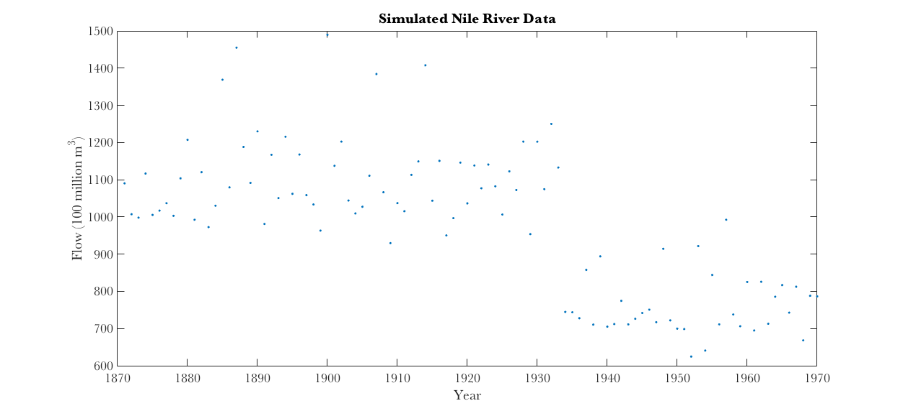
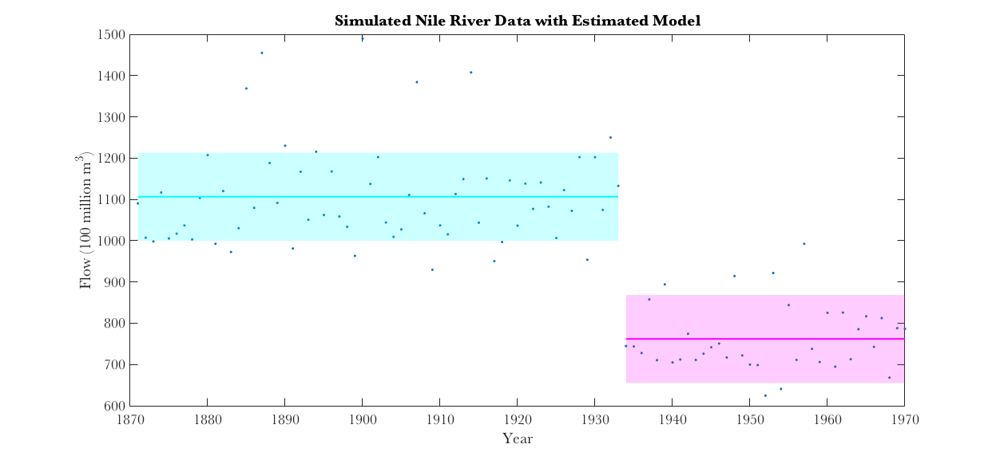
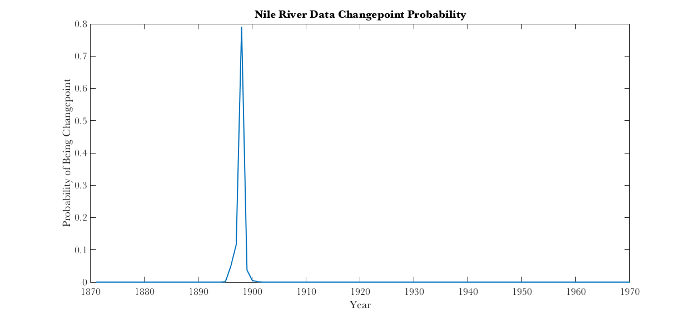
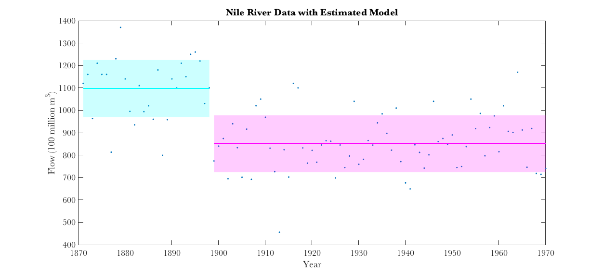

Project3_Question2.m
code to see results from Project 3, Question 2 code to run EM algorithm is attached as a MATLAB function
Contents
Generate fake data to test algorithm, based on generative changepoint mixture model
% simulate changepoint data, Gaussian mixture years = 1871:1970; N = length(years); Z = unidrnd(N-1,[1,1]); mu1 = 1100; mu2 = 800; sigsquare = 100^2; X = zeros(N,1); X(1:Z) = normrnd(mu1,sqrt(sigsquare),[Z,1]); X(Z+1:N) = normrnd(mu2,sqrt(sigsquare),[N-Z,1]); figure; plot(years,X,'.');title('Simulated Nile River Data'); xlabel('Year');ylabel('Flow (100 million m^3)'); fprintf('Changepoint at Year %d\n',years(Z)); fprintf('Mu before changepoint: %3.2f\n',mu1); fprintf('Mu after changepoint: %3.2f\n',mu2); fprintf('Process Standard Deviation: %3.2f\n\n',sqrt(sigsquare)); % run EM algorithm to estimate parameters from simulated data [mu1est,mu2est,sigsquareEst,Zest] = GaussChangepointEM(X); fprintf('Estimated changepoint at Year %d\n',years(round(Zest))); fprintf('Estimated Mu before changepoint: %3.2f\n',mu1est); fprintf('Estimated Mu after changepoint: %3.2f\n',mu2est); fprintf('Estimated Process Standard Deviation: %3.2f\n\n',sqrt(sigsquareEst)); figure;plot(years,X,'.');title('Simulated Nile River Data with Estimated Model'); xlabel('Year');ylabel('Flow (100 million m^3)'); stdev = sqrt(sigsquareEst); hold on;boundedline(years(1:Zest),mu1est.*ones(Zest,1),stdev.*ones(Zest,1),'c','alpha'); boundedline(years(Zest+1:N),mu2est.*ones(N-Zest,1),stdev.*ones(N-Zest,1),'m','alpha');
Changepoint at Year 1933 Mu before changepoint: 1100.00 Mu after changepoint: 800.00 Process Standard Deviation: 100.00 Estimated changepoint at Year 1933 Estimated Mu before changepoint: 1106.56 Estimated Mu after changepoint: 761.88 Estimated Process Standard Deviation: 106.66 
Simulated Data Results
This algorithm works very well, correctly picking out the year of the changepoint and also accurately estimating the means and variance.
Load Nile dataset, fit changepoint mixture model with EM algorithm, Problem 2-D
data = csvread('Nile.dat',1); years = 1871:1970; N = length(years); [mu1est,mu2est,sigsquareEst,Zest,piEst] = GaussChangepointEM(data); fprintf('Parameter Inferences for Nile River Dataset\n'); fprintf('Estimated changepoint at Year %d\n',years(round(Zest))); fprintf('Estimated Mu before changepoint: %3.2f\n',mu1est); fprintf('Estimated Mu after changepoint: %3.2f\n',mu2est); fprintf('Estimated Process Variance: %3.2f\n',sigsquareEst); figure;plot(years,piEst); title('Nile River Data Changepoint Probability'); xlabel('Year');ylabel('Probability of Being Changepoint'); figure;plot(years,data,'.');title('Nile River Data with Estimated Model'); xlabel('Year');ylabel('Flow (100 million m^3)'); stdev = sqrt(sigsquareEst); hold on;boundedline(years(1:Zest),mu1est.*ones(Zest,1),stdev.*ones(Zest,1),'c','alpha'); boundedline(years(Zest+1:N),mu2est.*ones(N-Zest,1),stdev.*ones(N-Zest,1),'m','alpha');
Parameter Inferences for Nile River Dataset Estimated changepoint at Year 1898 Estimated Mu before changepoint: 1097.29 Estimated Mu after changepoint: 850.72 Estimated Process Variance: 16140.28 
Actual Nile River Data Results
The algorithm predicts a changepoint occurred in the year 1898. The mean flow from 1871 to 1898 was estimated to be 1097.29 * 100 million cubic meters. The mean flow from 1899 to 1970 was estimated to be 850.72 * 100 million cubic meters, a drop of about 25,000 million cubic meters. The year-to-year variability (standard deviation) in flow was estimated to be 127.04 * 100 million cubic meters. What happened to the Nile?